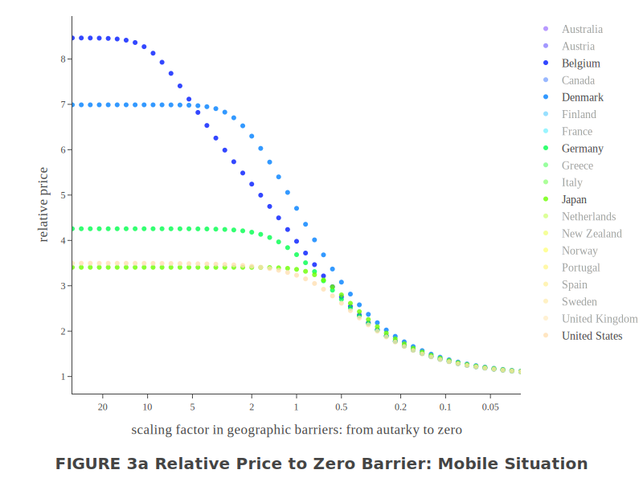
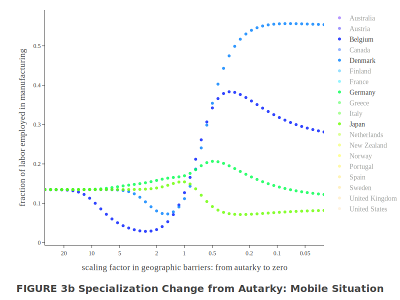

6 反事实模拟20
第 5 部分估计出的结构参数（见 Table 821）使我们可以进行反事实分析。由于该模型的简化22，反事实分析不应被视为具有明确含义的政策分析，但它们仍然提供了一些洞见。

可以将福利定义为 \(W_n = Y_n/{p_n^\alpha}\)
证明：记制造业价格水平为 \(p_a\)，消费量为 \(x_a\)，非制造业价格水平为标准化的 1，消费量为 \(x_b\)，名义 GDP 为 \(I\)。由于效用函数为 C-D 型，有 \(x_a = \alpha I/p_a, x_b = (1-\alpha)I\)，故效用为 \(\alpha^{\alpha}(1-\alpha)^{1-\alpha} \frac{I}{p_a^{\alpha}}\)。于是可以将 \(I/{p_a^\alpha}\) 作为对实际收入的衡量。\(\quad \blacksquare\)
6.1 贸易利得

Table 9 显示了对贸易障碍为无穷大情形（Autarky）的反事实模拟结果，前三列和后三列对应两种情境。
两种情境中，贸易障碍增加至 autarky 的水平都会导致福利下降。特别地，在第 3 列中，德国、日本、瑞典和英国的制造业就业出现萎缩，表明它们的制造业在现实中受益于贸易，或者说当下它们在制造业上具有较强的优势。因此，我们称其为 natural manufacturers。第 6 列中这四国制造业工资的下降说明了同样的事实。
然而，这四个 natural manufacturers 中的三个都是大国（日本、德国、英国）。它们在制造业上的竞争力到底来自于技术和工资（工资与绝对优势负相关），还是来自于规模和区位？如果是来自于前者，减少地理障碍将更加有利于它们发挥比较优势，从而导致制造业扩张；如果是后者，减少地理障碍将使得它们的区位优势消失，从而不利于它们的制造业。
为了验证这一问题，我们在劳动力可跨部门流动的假设下进行降低地理障碍的反事实模拟（令 \(d_{n i}=1, \forall n \neq i\)），结果如 Table 10 左半边。第三列显示美国制造业的萎缩程度最大，德国和日本的制造业就业有巨大下降而瑞典有大幅增长，似乎表明德国和日本的制造业优势主要得益于其规模或区位，瑞典则主要得益于技术/工资；与此同时，较小的边缘（peripheral）国家都经历了制造业扩张。

此外，模拟结果还显示（详见程序部分），我们离一个零贸易障碍的世界非常遥远——在这样的世界里，trade volumn 将是其目前水平的五倍左右。trade volumn 在现有基础上翻倍需要地理障碍 \(d_{n i}\) 降低到实际水平的69%，各变量变化的方向与前三列基本一致。
6.2 技术 vs 地理
对本节的详细解释，见程序部分。
我们的讨论引出了文献中多次出现的问题：在决定贸易模式（国际分工）时，技术和地理（贸易障碍）各自作用的大小。
在劳动力可跨部门流动的情境中，地理障碍消失时，由 (22) 式知，制造业就业与 \(T/w^{1+\theta\beta}\) 成正比，取决于技术水平和工资（此时工资由非贸易部门的生产率决定）；当地理障碍为无穷大时，由 (18)、(19) 式知，制造业就业占劳动力禀赋的比例为固定值 \(\alpha\)23 。这两种极端情况下，制造业就业都与地理障碍无关。
在这两个极端之间会发生什么呢？反事实模拟发现，随着地理壁垒从自给自足水平不断下降，制造业就业占比的变化出现了两种模式：
对于较小的国家，制造业首先萎缩，生产转移到中间品成本更便宜的较大国家。但是，随着地理障碍进一步下降，这一趋势将翻转，制造业就业占比不断增加，最终通常超过了 autarky 水平。Figure 3 中，丹麦很好地说明了这种模式。
对于样本中较大的国家（日本、德国），模式是相反的：它们的制造业先扩张后萎缩。美国则一直萎缩。


6.3 外国技术的溢出效应
在现有的地理障碍水平下，一国的技术进步可以通过贸易使全世界的福利改善，这个改善的国别分布是什么？我们先后令美国和德国的技术提高 20%，来观察标准化的各国福利变化幅度（各国福利变化幅度除以技术进步国的福利变化幅度）。Table 11 显示了反事实模拟的结果。

当劳动力可跨部门流动时，收入外生，福利只与价格有关。因为各国都享受到了价格更低的制造业产品，故各国福利普遍改善。
当劳动力不可跨部门流动时，除了价格下降，他国福利同时还受到负收入效应的影响（因为制造业工资下降）。若一国制造业就业占比很大，则该国总体福利可能会下降——日本和德国是典型。
离技术进步的国家越近和规模越小的国家，其福利改善的幅度越大。日本距离技术进步国既远，本身规模又大，从美国或德国的技术进步中得到的好处是最少的。
综上，充分享受他国技术进步的溢出效应需要两个条件：（1）距离技术进步源头足够近；（2）规模足够小。
6.4 削减关税
我们的框架很容易结合关税收益。设进口国 \(n\) 在 \(i\) 国商品到岸价格的基础上征收从价税，税率为 \(t_{ni}\)。于是地理障碍可以拆分成自然地理障碍和关税两部分：\(d_{n i}=\left(1+t_{n i}\right) d_{n i}^{*}\)。关税收益为：
\[ T R_{n}=\sum_{i \neq n} \frac{t_{n i}}{1+t_{n i}} X_{n i} \]
以所有国家对所有进口商品征收统一的 5% 关税为 baseline，进行三种情境的反事实模拟：
所有国家移除关税。劳动力可以跨部门流动时，所有国家的福利增加，且大于劳动力不可流动的情境。
美国单边移除关税。其他国家都有正的福利效应，而美国福利降低，其中加拿大的福利正效应最大。在劳动力流动情境下，其他所有国家的福利收益等于或大于美国的福利损失。这一结论说明了多边协调自由贸易的重要性（打破囚徒困境）。
欧洲共同体（EC）内部互相移除关税。Table 12 表明，福利分配与劳动力是否可以跨部门流动密切相关。如第二列显示的，在劳动力不可流动时，主要的受害者是距离 EC 比较近的非 EC 成员国，它们的制造业工资下降了。在劳动力可以流动时，第一列显示，受害者是北方的 EC 国家（比利时、荷兰、丹麦、德国、英国）。这种情境下，非 EC 成员国可以通过将劳动力转移到非制造业来规避制造业工资的下降。北方 EC 国家将进口来源从非成员国转向南方 EC 国家。第三、四列表明，市场一体化使得成员国之间的贸易大量增加。而且在劳动力流动情形下，因投入品价格下降获得了一定的成本优势，EC 国家对非 EC 国家的出口通常也扩大了。

由于以下两个原因，这一部分的分析是不完美的：（1）我们假设各国的 \(\alpha\) 相同；（2）我们忽视了样本中的19个 OECD 国家以外国家的制造业，其实可以在模型中加入一个世界其他地区。↩︎
其中最终制成品占总支出的比例 \(\alpha\) 估计自下式：\(X_{n n}+IMP_{n}=(1-\beta)\left(X_{n n}+EXP_{n}\right)+\alpha Y_{n}\)。左边为 \(n\) 国制造业产品的总供给，第一项为国内生产，第二项为进口；右边为制造业产品的总需求，第一项为本国制造业对中间产品的需求，第二项为本国消费者对制造业最终产品的需求。↩︎
通过一系列很强的假设。例如，没有考虑制造业内部跨产业部门的地理障碍异质性。↩︎
自给自足时，(18) 式变为 \(w_n L_n = \beta X_n\)。代入 (19) 式，且有劳动力可流动时工资一致，于是 \(\frac{w_n L_n}{\beta} = \frac{1-\beta}{\beta}w_n L_n+\alpha w_n \bar{L_n}\)。化简得 \(L_n = \alpha \bar{L_n}\)，即制造业就业占劳动力禀赋的比例为固定值 \(\alpha\)。↩︎